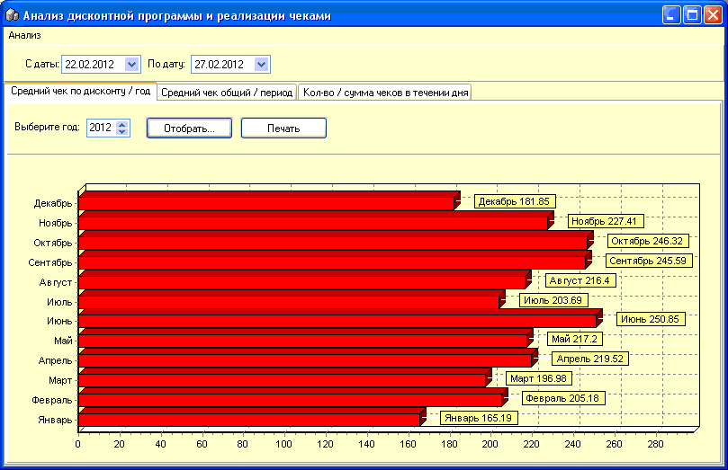
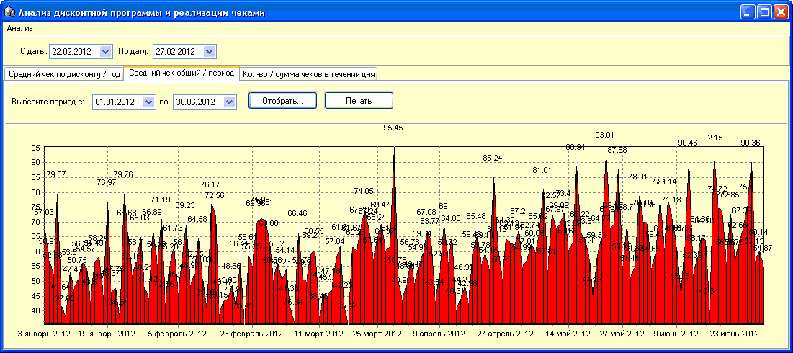
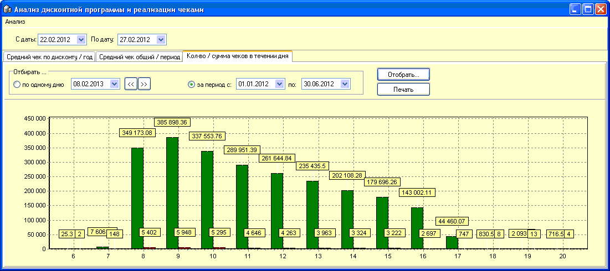
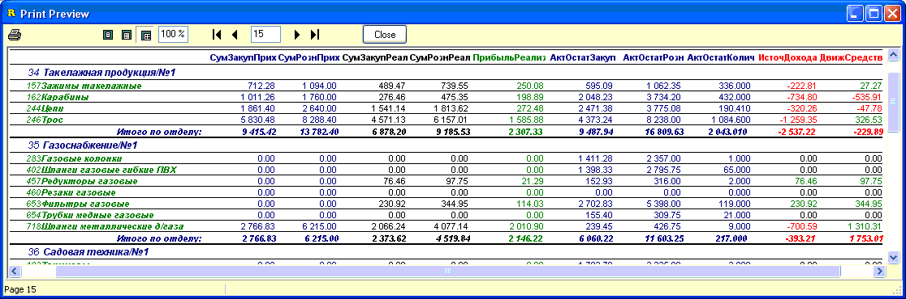

Группа отчетов и графиков "Анализ дисконта,
реализации" позволяет в накладном виде продемонстрировать результаты
дисконтной программы магазина и вывести некоторые маркетинговые параметры
реализации. Форма состоит из трех вкладок с графиками и одного встроенного
отчета в главном меню. Рассмотрим данные элементы подробнее.
Первая вкладка - "Средний чек по
дисконту/год" позволяет, выбрав год, посмотреть в наглядном виде на
сумму среднего чека, по которому предоставлялась скидка в помесячном
разрезе.

Вторая вкладка - "Средний чек
общий/период" показывает в виде графика сумму среднего чека за
выбранный период.

Третья вкладка - "Кол-во/сумма чеков в
течении дня" позволяет проанализировать в графическом виде
хронологическое распределение покупок в магазине в количественном и суммовом
выражении, как в течении одного дня, так и за выбранный период. Эта
информация позволяет, например, принимать решение о целесообразности текущего
рабочего графика магазина.

В главном меню формы "Анализ" содержится
встроенный отчет "Отчет по отделам в разрезе товарных групп",
который использует для выборки календарики С даты/По дату в самом верху формы.
Под рисунком ниже даны пояснения к выводимым столбцам отчета, позволяющего
проанализировать основные товарно-суммовые показатели в разрезе
отделов/товарных групп.

Все показатели - только за указанный
период.
Столбцы 1, 2 (синим) - закупочная и розничная
сумма поступлений товара по приходным накладным.
Столбцы 3, 4 (черным) - закупочная и розничная
сумма продаж товара реализации товара чеками и расходными
накладными.
Столбец 5 (зеленым) - прибыль
реализации.
Столбцы 6, 7, 8 (синим) - текущие (активные)
партионные остатки по товарным группам в закупочной и розничной ценах и в
количественном выражении.
Столбец 9 (красным) "Источник Дохода" =
Столбец 3 - Столбец 1. Разница между закупочной ценой реализации и
закупочной суммой прихода.
Столбец 10 (красным) "Движение Стредств" =
Столбец 4 - Столбец 1. Разница между розничной суммой реализации и закупочной
суммой прихода.